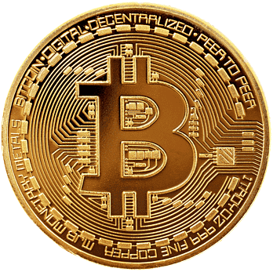
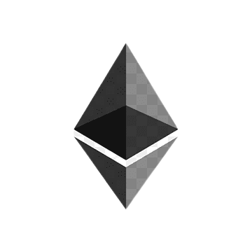
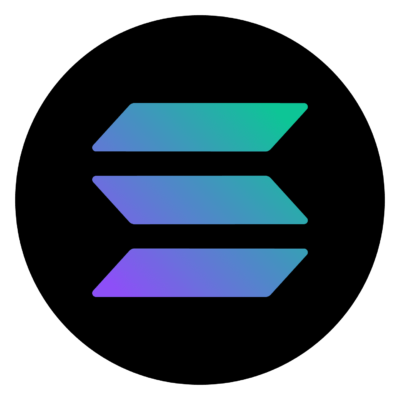


 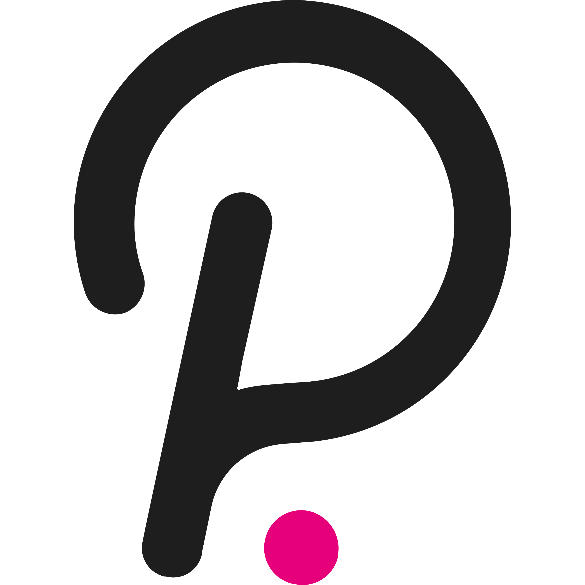
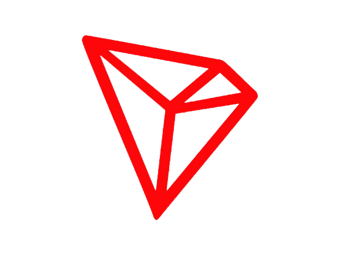
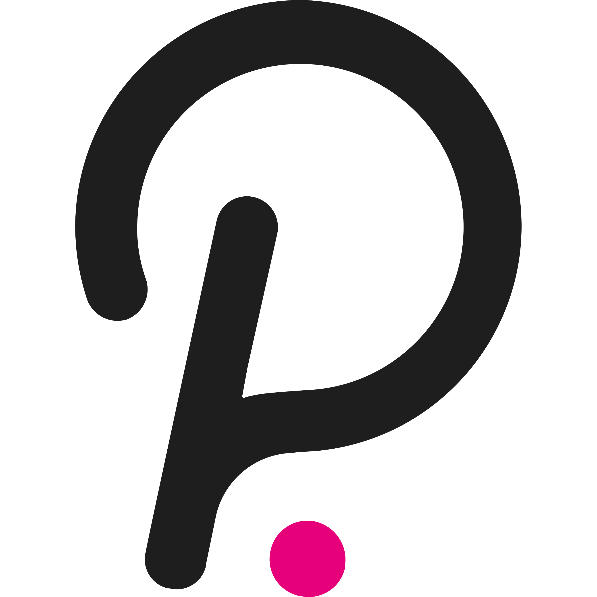
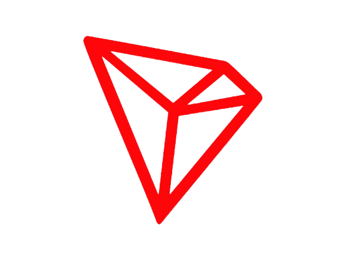


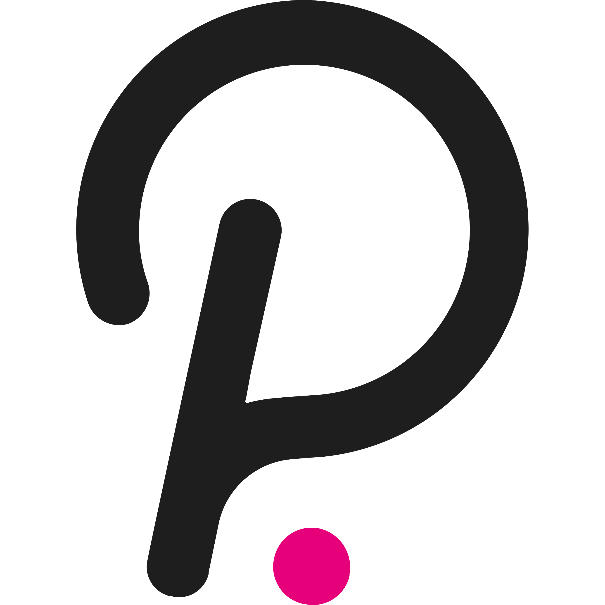
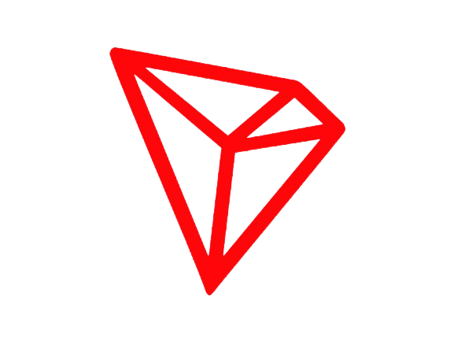
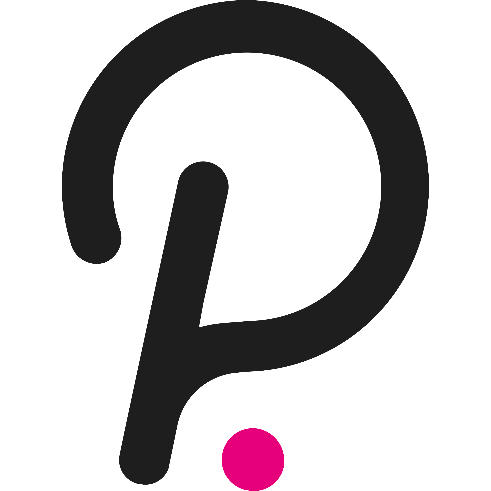
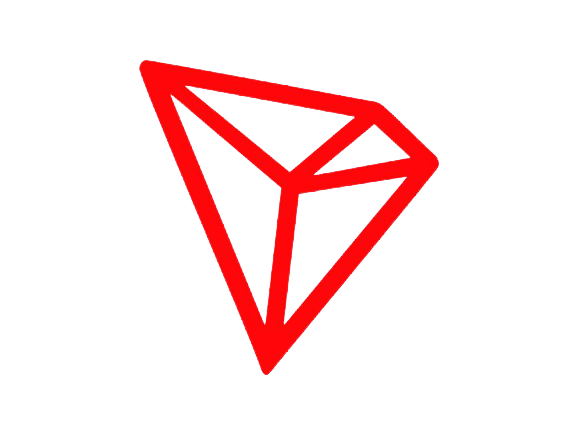
Bitcoin është një kriptovalutë dhe një sistem pagese në mbarë botën. Eshtë monedha e parë dixhitale e decentralizuar, pasi sistemi funksionon pa një bankë qendrore ose një administrator të vetëm. Rrjeti është kolegji dhe transaksionet bëhen ndërmjet përdoruesve direkt përmes përdorimit të kriptografisë një ndërmjetës. Këto transaksione verifikohen nga nyjet e rrjetit dhe regjistrohen në një libër të pandryshueshëm të shpërndarë publik të quajtur një bllokkëndësh
Ethereum është një blockchain i decentralizuar , me burim të hapur , me funksionalitet të kontratës inteligjente . Etheri është kriptomonedha vendase e platformës. Ndër kriptovalutat, Ether është i dyti vetëm pas Bitcoin në kapitalizimin e tregut .
Solana është një platformë publike blockchain . Kriptomonedha e saj e brendshme është SOL. Solana arrin konsensusin duke përdorur një mekanizëm të provës së aksioneve , si dhe një mekanizëm "provash të historisë", për të cilin letra e bardhë e Solanës pretendon se përmirëson efikasitetin.Në vitin 2021, gazetarja e Bloomberg , Joanna Ossinger e përshkroi Solanën si "një rival potencial afatgjatë për Ethereum ", duke përmendur shpejtësitë më të larta të transaksionit dhe kostot më të ulëta të lidhura.
Binance është një shkëmbim kriptovalutash i cili është shkëmbimi më i madh në botë për sa i përket vëllimit të tregtimit ditor të kriptomonedhave . Ajo u themelua në 2017 dhe është e regjistruar në Ishujt Kajman . Binance u themelua nga Changpeng Zhao , një zhvillues që kishte krijuar më parë softuer tregtimi me frekuencë të lartë . Binance fillimisht ishte i bazuar në Kinë, por më vonë e zhvendosi selinë e tij jashtë Kinës pas rregullimit në rritje të qeverisë kineze për kriptomonedhën . .
Cardano is a public blockchain platform. It is open-source and decentralized, with consensus achieved using proof of stake. It can facilitate peer-to-peer transactions with its internal cryptocurrency, ADA. Cardano was founded in 2015 by Ethereum co-founder Charles Hoskinson. The development of the project is overseen and supervised by the Cardano Foundation based in Zug, Switzerland.It is the largest cryptocurrency to use a proof-of-stake blockchain, which is seen as a greener alternative to proof-of-work protocols.
"Terra describes itself as a price-stable cryptocurrency aimed at mass adoption. As its scale grows, the team aims to have Terra evolve into a new financial infrastructure for the next generation of decentralized apps." From the Chorus One (which provides staking on Terra) website : "Terra is a protocol to create decentralized price-stable cryptocurrencies (stablecoins). Terra is hosting a set of stablecoins and processing transactions of partners integrating with the network."
Polkadot is an open source, blockchain platform and cryptocurrency that allows for distributed computing. The network uses a proof of stake consensus algorithm. The protocol used, Blind Assignment for Blockchain Extension , is derived from Ouroboros. The protocol was adapted by the Ethereum co-founder Gavin Wood and is developed by the Web3 Foundation with the initial implementation by Parity Technologies.
TRON is a decentralized, open-source blockchain-based operating system with smart contract functionality, proof-of-stake principles as its consensus algorithm and a cryptocurrency native to the system, known as Tronix (TRX). It was established in March 2014 by Justin Sun and since 2017 has been overseen and supervised by the TRON Foundation, a non-profit organization in Singapore, established in the same year. It is originally an Ethereum-based ERC-20 token, which switched its protocol to its own blockchain in 2018.
Bitcoin është një kriptovalutë dhe një sistem pagese në mbarë botën. Eshtë monedha e parë dixhitale e decentralizuar, pasi sistemi funksionon pa një bankë qendrore ose një administrator të vetëm. Rrjeti është kolegji dhe transaksionet bëhen ndërmjet përdoruesve direkt përmes përdorimit të kriptografisë një ndërmjetës. Këto transaksione verifikohen nga nyjet e rrjetit dhe regjistrohen në një libër të pandryshueshëm të shpërndarë publik të quajtur një bllokkëndësh
Dogecoin is a cryptocurrency created by software engineers Billy Markus and Jackson Palmer, who decided to create a payment system as a "joke", making fun of the wild speculation in cryptocurrencies at the time. It is considered both the first "meme coin", and, more specifically, the first "dog coin". Despite its satirical nature, some consider it a legitimate investment prospect. Dogecoin features the face of the Shiba Inu dog from the "Doge" meme as its logo and namesake. It was introduced on December 6, 2013, and quickly developed its own online community, reaching a market capitalization of over $85 billion on May 5, 2021